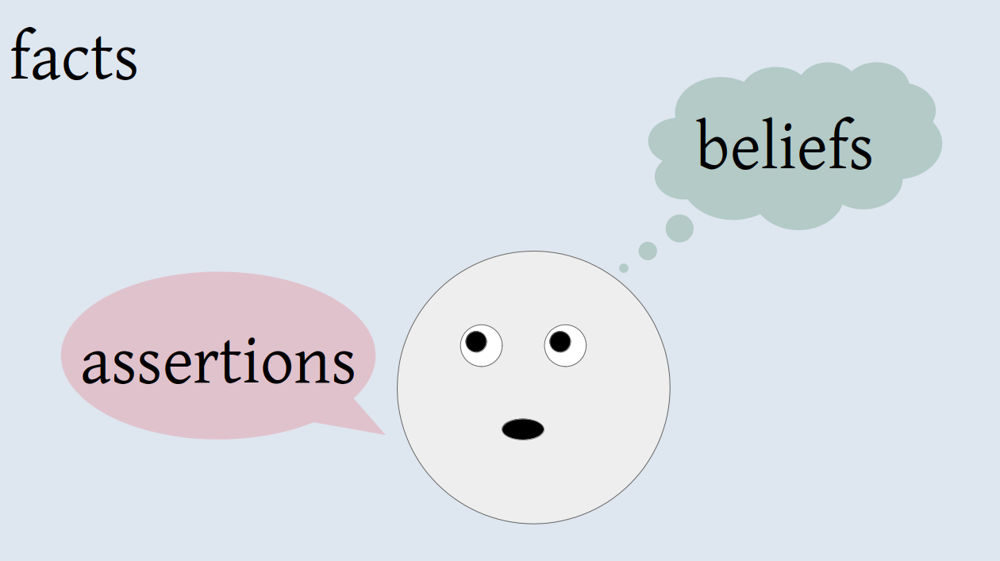
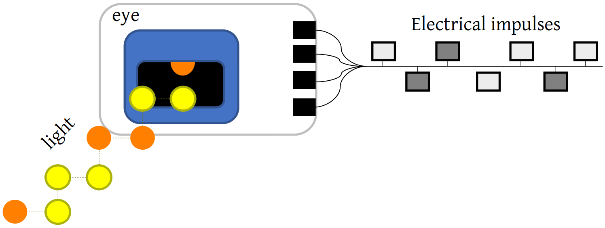
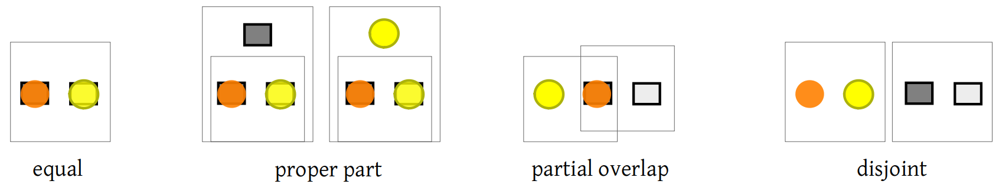
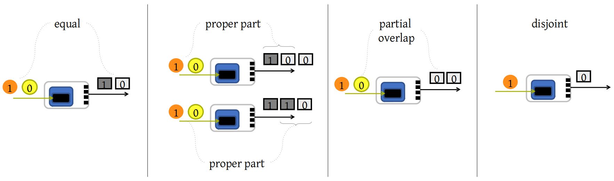

Act II - No Country for Practical Men
It’s decided, we set sail! We leave our “Salem’s Lot”. The boat journey is long and one sleepless night we can’t stop thinking about the practical observations of the practical experts: “The problem with cyberINsecure animals is that they are easily attacked by fungi, viruses, and many others; often leading to the death of the animal. Observations show that the attack pattern is as follows. Fungi move over the body of the animal (behavior called information gathering) until they find a weak spot and corrode the skin (creating an entry point). Viruses are then free to exploit the weak spot and enter the animal, reading the plain-DNA and exploiting it for their replication. The only solution is to give a great dose of anti-fungi and anti-viruses every day as a precaution to every animal”. He even concluded by saying: “Viruses are always evolving, and anti-viruses too; but it’s always too late to cure all the cases. We must get faster in reacting to viruses!”.
And we finally fall asleep.
The Im-Practical God
A dream? We see a God dividing a giant pyramid into pieces of different geometrical shapes: cubes, smaller pyramids, … We slightly turn and we see another God who is shaking his 8-ball whispering: “how much fuel do I need to reach the moon?”.
… practical Gods! They too understand by induction from experience?! But Gods do not obey to the rule of experience, the rules of nature, why are they doing it? And why do they all have an ML tag on their forehead?
We wake up! We must think something up! Our plan is simple: once we have an idea of what a cybersecure animal is, we’ll start empirically testing its correctness. So, we lay down again and, when we close our eyes, we are alone in a colorless, soundless, potentially infinite, space.
If there’s a fact we can be sure about, is that everything we can think of can somehow be represented in this space; cybersecure animals won’t make an exception. Well, to be honest, sometimes we are uncertain if we know the truth about something, but we still believe it in that space. And to be absolutely honest, this space is no soundless at all, we hear our thoughts and reasoning, we say them. This reminds us of a too-simple idea that every animal, we too, can be conceptualized as thinking subjects who assert their beliefs to anyone who hears, and the facts (of the world around us) will be used to judge the validity of our beliefs.

We hear the captain yelling. We just docked at the port. Where are we?
The Model-based-designed-animals Island
Captain We have practical things to do. You, impractical sailor, come back in two weeks!
So, we head inland, we look up and a forest awaits us. Refreshed, in the forest, we walk upstream along a small brook. We find what seems like an abandoned farm. We can really use a place to stay for a while. Wait… the farm isn’t abandoned.
Us: Morning.
Farmer: Evening, son! You lost?
Us: yes… evening. Eh… yes. Where are we?
Farmer: That way is Hazelden cit…
Us: No, sorry. I mean… what’s the name of this island?
Farmer: This is Model-based-designed-animals island.
Us: What a weird name!
Farmer: It’s an old name. This island was discovered by a group of scientists and engineers. While staying here, they had to come to terms with the island and became farmers. But they did it their way, designing animals and artificially implementing them from the designs. It was beautiful and, after a while, all the animals were artificially engineered. But the cost of living has made us farmers stop designing animals in favor of a much faster “implement and patch” approach. So, we now implement animals without designing them. There’s always something wrong but this is how we discover “new features”… you know?! Plus, we can always patch them.
Us: I see… a bit sad. How about all those new fungi and viruses?
Farmer: That is a tragedy! Practical people are releasing those fungi and viruses to steal or change our animals.
Us: Did you just say, “practical people”?
Farmer: Yes, I still consider myself an architect who designs his animals. The truth is, I’m just as practical as they are. I’m not designing them anymore, just coding, patching, and patching.
Us: Ever wondered how to design a cybersecure animal?
Farmer: Once we almost did it, but that pig flew away.
We spent the dinner with the farmer, talking about insecure animals. Basically, any insecure animal he finds is under attack by a practical man. Those attacks are exploiting some vulnerability of the animal which, in turn, are just weaknesses due to errors in the farmer’s code. He’s spent decades fixing those errors. Every time he finds one, he fixes it. He even tests his own animals, fixing even more errors. He shared that, at the beginning, new errors popped up every day, but then every hour… until it got unbearable. So, we insist:
Us: Why don’t you design an animal without errors?
Farmer: I told you already. I did try that, but it wasn’t working properly, and the “secure” animal flew away.
Us: But from your observations, all insecurities can be “cured by” designing an animal without errors.
Farmer: Yes… I tried it with the help of two other farmers: Dolev and Yao. They designed the perfect test. We believed we could identify any insecurity in the logic of our designs. Still, animals were ultimately implemented insecurely. Plus, we invested everything we had…
Us: Wait, you said you could search for insecurities in the logic? How?
Farmer: They identified the actions of viruses and fungi and they came up with this “attacker model” that worked on designs but it…
Us: Ah! That’s the problem! You are testing now, and you were testing back then! An attacker model mimics the attacker but how did you get the idea of the attacker if not from empirical observations? You didn’t design a secure animal; you just tested the design against the idea you had of what an attacker may do.
Farmer: It’s really much more complex that this but, have you got a better idea?
Us: Not really… but your methodology seems wrong to me. Just imagine this: what if you couldn’t explain some properties of a real-world triangle. Wouldn’t that suggest that your idea of the triangle is somewhat misleading or over-simplifying? I mean… triangles are lines in a one-dimensional space and no area can be understood in that idea(lization). But as soon as you introduce a “better” idea of a triangle in 2D, areas do not just make sense, but can be predicted in the abstract; real-world calculations serve just as confirmation of the accuracy of the predictions.
We spent the rest of our “vacation” at the farm, mostly studying some of the farmer’s old designs and his animals, asking too many questions, until it was our last night on the island.
It Was a Dark and Stormy Night
Already on our boat, we are waiting for better weather conditions. We keep thinking at the days spent with the farmer. We even created our own electric sheep. Kind of weird how it looks like. There’s no mouth, digestion system, smells… It looks like a sheep, but it only has “eyes” and “ears”, an intricate mechanical internal structure, and a low-cost computer in his head. Well, “eyes”… they are not even cameras. One of those “eye” is really just a hole and a light sensitive surface… So simple, and yet we don’t know what a secure eye is… It’s a stupid “port” that the “brain” of the sheep can use to get data from the outer visible world. Light comes to the “eye” and the data encoded in the light is translated and transmitted to the “brain”.
So, an “eye” just forwards data… and maybe translates data from light into electrical impulses… How bad can that be hacked? Let’s abstract the sheep-eye in our ideal space.

Here light is correctly translated into electrical impulses and the data carried by the light is equal to the data in the electrical impulses. But what if the eye isn’t working properly? We remember the good Ol’days when math was just boxes (they were called sets, but they were just believed to be boxes). It was so easy, a practical real concept such as a box and its abstract representation as a set were so close that we didn’t really distinguish the two. And yet, we could predict in the abstract all possible configurations of any number of boxes and then test our prediction by building the real-world configuration. We still remember that two boxes can be equal, different, or partially equal. But if we have a box with the light-data of the outside world (the facts) and one the with electric data in the sheep (its beliefs), how can light-data be partially equal to electric data? Well, boxes can be partially overlapping or one into the other.

So Similarly:
- Light-data can be partially translated so that electric-data lacks some data (data partial delete).
- Or, vice-versa, light-data lacks some electric-data. So, the eye has inserted some data.
- Or both, and light-data and electric-data overlaps so that some light-data have been substituted with some different electric-data.
THAT’S IT! We have an abstract ground (made by a space and some operations) that can explain insecure designs… all of them! It was so simple! Any eye can just be secure or insert/remove/substitute data, and nothing else! The adrenaline makes us jump off the bed… but it’s overwhelming, and we faint. A practical god approaches us.
The-Vulnerability-Assessment-Practical-God: Why all this happiness? To me your “idea” is nothing more than an attacker model.
Us: No, it’s not! It’s not the attacker who creates errors, the attacker just uses them. So, we’ve defined every possible behavior with respect to an abstract, general, box-theoretic interpretation… we have an idea and a theory. We can predict all the errors that the sheep-eye can make in the abstract, by looking at the configurations of our boxes. Here is how:

You see?! We are general because there are no other possible attacks in our abstraction. There are no other possible configurations of those boxes but the ones we described.
The-Risk-Assessment-Practical-God: AH-AH-AH! You little mortal! You can’t use your “theory”! Can you tell me which one of your configurations will be used to attack?
Us: The fact that an attacker will use one of those configurations or not, isn’t important. It’s just the difference between a potential weakness and an actual vulnerability. But we want to know all the attacks, not just those that attacker discovers or uses. So, we don’t distinguish between errors in the abstract (weaknesses) or errors used in an attack (vulnerability). We want to know all the weaknesses… we’ll think of a metric to prioritize weaknesses which can be used in an attack… one day.
We finally wake up and rush off the boat, running to the farm. We wake up the farmer and show him our idea, talking and speculating for a solid hour. He listens carefully, and when we stop…
Farmer: What if you have an eye that, by design, blurs the faces? Its electric-data cannot be expressed in terms of the light-data and your idea won’t be of any use.
Us: …
Farmer: It’s not raining anymore; you have a boat to take.
He’s right, it stopped raining. The dark and stormy night moved within us.
UnTrue Lies
For the whole trip back, we did the only thing we could: sailing during the day and detailing our idea during the night; drafting an etiological explanation of the cybersecure animal until we came back home, with our idea ready to be shared. We looked back at our draft and we decided to send it to the farmer with a message: “It’s much more detailed now and there’s much more than what we briefly discussed together. Hope you enjoy it”. His reply? “Thanks”. Maybe he was just too busy to go through it, so we called other farmers and they all replied “thanks”. At first, we thought we just met a lot of busy people but, “thanks” after “thanks”, we started wondering… is there a hidden truth they found in our good-ish approach, so ugly they didn’t dare to tell us?
And suddenly, an insight! The missing piece of the puzzle! We take a piece of paper and:
“the internal functioning of the brain of the electric sheep can be seen as a monolithic piece, holding the details of the behavior of the sheep. The first sheep we created was replying “hello world” any time it saw the sun. But that was our dogmatic view! The truth is that it says “hello world” even to a flashlight. The misalignment between what we require and what the sheep really does, make us believe in wrong dogmas. Furthermore, the functionality of the sheep is an aggregation of smaller functionalities which we must not dogmatically define but interpret in… <CRACK>“
The pen broke… we must go buy another one. We open the wallet. Is that our last coin?!
End of Act II